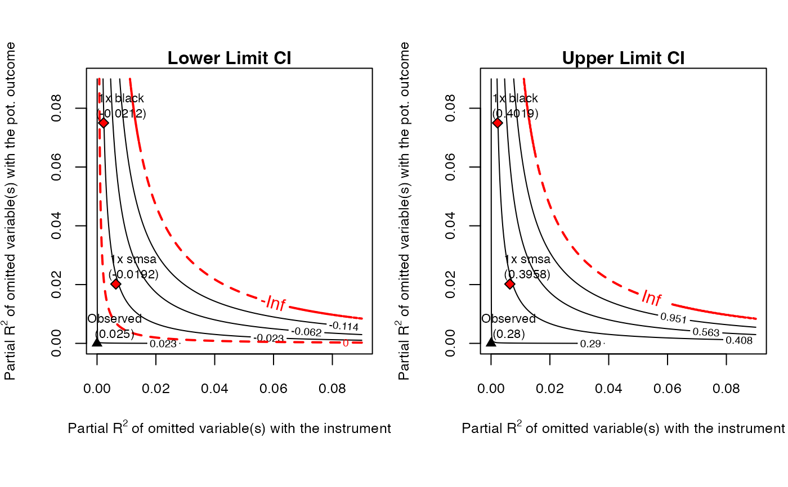

This function performs sensitivity analysis of instrumental variable estimates, as discussed in Cinelli and Hazlett (2025).
The main input is an object of class iv_fit. It returns an object of class iv.sensemakr with several pre-computed sensitivity statistics for reporting. After running sensemakr you may directly use the plot, print and summary methods in the returned object.
Usage
sensemakr(...)
# S3 method for class 'iv_fit'
sensemakr(
model,
benchmark_covariates = NULL,
kz = 1,
ky = kz,
kd = kz,
r2zw.x = NULL,
r2y0w.zx = r2zw.x,
bound_label = "Manual Bound",
q = 1,
alpha = 0.05,
min = TRUE,
...
)Arguments
- ...
arguments passed to other methods.
- model
a model created with the function
iv_fit.- benchmark_covariates
character vector of the names of covariates that will be used to bound the plausible strength of the latent variables.
- kz
numeric vector. Parameterizes how many times stronger the latent variables are related to the instrument in comparison to the observed benchmark covariates. Default value is
1(latent variable is as strong as benchmark covariate).- ky
numeric vector. Parameterizes how many times stronger the latent variables are related to the (pot.) outcome in comparison to the observed benchmark covariates.
- kd
numeric vector. Parameterizes how many times stronger the latent variables are related to the treatment in comparison to the observed benchmark covariates. Default value is the same as
kz.- r2zw.x
(optional) hypothetical partial R2 of latent variables W with the instrument Z, given observed covariates X.
- r2y0w.zx
(optional) hypothetical partial R2 of latent variables W with the (pot.) outcome Y(0) given Z and X. Default is the same as
r2zw.x.- bound_label
label to bounds provided manually in
r2zw.xandr2y0w.zx.- q
percent change of the effect estimate that would be deemed problematic. Default is 1, which means a reduction of 100% of the current effect estimate (bring estimate to zero).
- alpha
significance level.
- min
should we consider biases as large or larger than a certain amount? Default is
TRUE.
Value
An object of class iv.sensemakr, containing:
-
pars A
listwith the general parameters used when calling sensemakr.-
unadjusted A
listwith the original, unadjusted results.-
sensitivity_stats A
listwith the sensitivity statistics of the IV, First-Stage, and Reduced-Form regressions.-
bounds A
listwith bounds on the strength of latent variables if they were "k times" as strong as the benchmark covariates.
References
Cinelli, C. and Hazlett, C. (2025), "An Omitted Variable Bias Framework for Sensitivity Analysis of Instrumental Variables." Biometrika. doi:10.1093/biomet/asaf004
Examples
# loads package
library(iv.sensemakr)
# loads dataset
data("card")
# prepares data
y <- card$lwage # outcome
d <- card$educ # treatment
z <- card$nearc4 # instrument
x <- model.matrix( ~ exper + expersq + black + south + smsa + reg661 + reg662 +
reg663 + reg664 + reg665+ reg666 + reg667 + reg668 + smsa66,
data = card) # covariates
# fits IV model
card.fit <- iv_fit(y,d,z,x)
# see results
card.fit
#>
#> Instrumental Variable Estimation
#> (Anderson-Rubin Approach)
#> =============================================
#> IV Estimates:
#> Coef. Estimate: 0.132
#> t-value: 2.33
#> p-value: 0.02
#> Conf. Interval: [0.025, 0.285]
#> Note: H0 = 0, alpha = 0.05, df = 2994.
#> =============================================
#> See summary for first stage and reduced form.
#>
# runs sensitivity analysis
card.sens <- sensemakr(card.fit, benchmark_covariates = c("black", "smsa"))
# see results
card.sens
#>
#> Sensitivity Analysis for Instrumental Variables
#> (Anderson-Rubin Approach)
#> =============================================================
#> IV Estimates:
#> Coef. Estimate: 0.132
#> t-value: 2.33
#> p-value: 0.02
#> Conf. Interval: [0.025, 0.285]
#>
#> Sensitivity Statistics:
#> Extreme Robustness Value: 0.000523
#> Robustness Value: 0.00667
#>
#> Bounds on Omitted Variable Bias:
#> Bound Label R2zw.x R2y0w.zx Lower CI Upper CI Crit. Thr.
#> 1x black 0.00221 0.0750 -0.0212 0.402 2.59
#> 1x smsa 0.00639 0.0202 -0.0192 0.396 2.57
#>
#> Note: H0 = 0, q >= 1, alpha = 0.05, df = 2994.
#> =============================================================
#> See summary for first stage and reduced form.
#>
# sensitivity contour plot
plot(card.sens, lim = 0.09)
